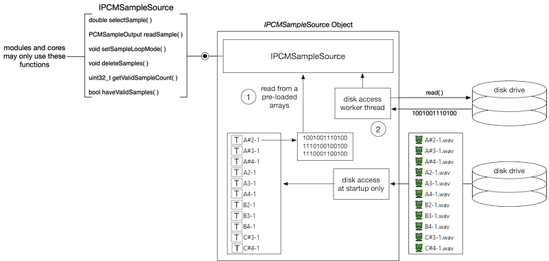

The SynthLabSamples folder includes all of the PCM samples used in the SynthLab-PCM project, packaged as "patches" in individual folders that are inside of the containing folder for the synth. The platform independent PCMSample object opens the WAV files and extracts their audio guts into dynamically alloted arrays for instant playback within the synth. This object needs to know the path to the files it opens. The SynthLab example PCM files are stored in folders whose names are used on the GUI (there is no real dependency for this, it is only for easier reading/understanding in the synth book).
PCM Sample Folder Location
You have numerous options when packaging your sample based synth for the user and if you can build a Windows or Mac installer, then you have a good idea for the permitted locations of these files. One thing to avoid is packaging them within the plugin bundle itself. The SynthLab-PCM oscillators are coded to find their samples in a specially named folder that is fixed relative to the plugin binary itself. The SynthLabSamples folder resides in the same folder as the plugin bundles. For example:
Windows VST3: C:/Program Files/Common Files/VST3
MacOS AU: /Library/Audio/Plug-Ins/Components/
MacOS VST3: /Library/Audio/Plug-Ins/VST3/
The SynthLab-PCM oscillators rely on the engine to relay back the location of this folder, that the plugin itself can request from the framework or from the OS directly. Both Windows and MacOS have standardized ways of obtaining this path from within the plugin.
However, you may also hardcode this path into the oscillator cores (see the reset( ) function), have the core read the location from a specified file, or some other safe method of generating the path to the folder. See the core example files for more details.
Folders
The PCM samples are organized in multi-sets that reside in folders. The oscillators know the names of these folders that they either append to the DLL path from the host, or that they have apriori knowledge of the location. The included sample sets consist of:
- legacy: a set of 16 multi-sets for various bass patches, culled from the 1st edition synth book and appearing for free in FutureMusic magazine
- mellotron: a set of the 10 patches from the Mellotron instrument in long (7-10 second) loops from sonic-bloom
- waveslices: a bank of 4 sets of PCM samples sliced from a variety of sources using aubio
- drumloops: files that loop from beginning to end (used for homework in the book)
- gravity: a set of wave slices made with aubio (used for homework in the book)
IPCMSampleDatabase
The PCM sample oscillator and its cores access the sample information from a shared object that implements the IPCMSampleDatabase interface. This interface is platform independent and framework/API agnostic. The database object provides a simple set of functions for querying, adding and removing PCM sample sets. The objects that use the database do not know any details of how the database stores its information, or whether the samples came from WAV files or not.
During initialization, the PCM sample oscillator cores will perform the following steps on the database at initialization time:
- checking the database to see if a PCM sample exists; the PCM samples are identified with unique PCM sample strings that will be connected to a GUI control that likewise will need to expose unique strings to the user
- adding PCM samples to the database if they don't exist; PCM sample objects implement the IPCMSource interface, which is used for storing and reading the PCM data
IPCMSampleSource
A set of sample arrays are contained within a single object that implements the IPCMSampleSource interface. This interface is used during the oscillator updating and rendering phases. During note event rendering, these oscillator cores will then use the database and:
- select a PCM sample set based on the user's choice (if it has changed while the note is held, or if this is a new note event); the database returns an IPCMSampleSource pointer
- select a particular PCM sample array from the set based on the oscillator's current pitch, including modulation sources and GUI manipulation; the IPCMSampleSource::selectSample( ) method is used
- asks the IPCMSampleSource for a sample at a particular location within the array (including interpolation if used) to fill its output buffer with data
The figure here shows how the interface isolates the implementation details and hides them from the SynthModule or ModuleCore object that accesses them via the IPCMSampleSource interface functions. Two possible internals are shown and include:
- accessing and pre-loading the multi-sample WAV files at startup into data-arrays (or a data-brick, if desired); this is how the SynthLab example objects work
setting up a worker thread and accessing tables from disk at run-time as notes are triggered; this is quite complex and will certianly be programmer or company-centric in nature – note that there are numerous US patents involved in sample-based syntgesis; start your journey here: https://patents.justia.com/assignee/invision-interactive-inc

SynthLab includes only one SynthLabPCMSource object that demonstrates how to create a sample source object and exposes IPCMSampleSource using the PCMSample and WaveFolder objects to find, parse, and store audio samples extracted from the WAV files. Figure 11.2 (from my synth book) shows the Mellotron sample set folder hierarchy with each patch stored as a folder of WAV files.
Figure 11.2: the Mellotron core directory contains subdirectories for each patch which in turn contain a set of wave files; each of these is extracted into a PCMSample object and stored in an array of pointers in an IPCMSampleSource object
During extraction, each WAV file's audio data is stored in a PCMSample object. The SynthLabPCMSource object stores an array of pointers to these PCMSample objects. Connecting objects use the IPCMSampleSource interface functions to read and interpolate the arrays. As with the wavetable paradigm, none of the oscillators nor cores knows or needs to know informaiton about the samples. They are simply fed sample data when they request it. Figure 11.3 shows how the PCM sample database conceptually organizes the PCM sources according to unique names and how the samples for the Mellotron and Legacy files are distributed across the keyboard.
Figure 11.3: (a) the sample sources are arranged in a database and accessed via a unique name string (b) the shaded keys show the included wave files for the Mellotron, sampled on every note from G2 through F5 while the (c) legacy files include samples on minor third boundaries from A1 through C4
This paradigm allows you to write two C++ objects (one for the database and one for the PCM sample source) that expose the two interfaces above and then you can connect them directly with the synth engine, which shares the IPCMSampleDatabase with its voice objects, who share them with their oscillators.